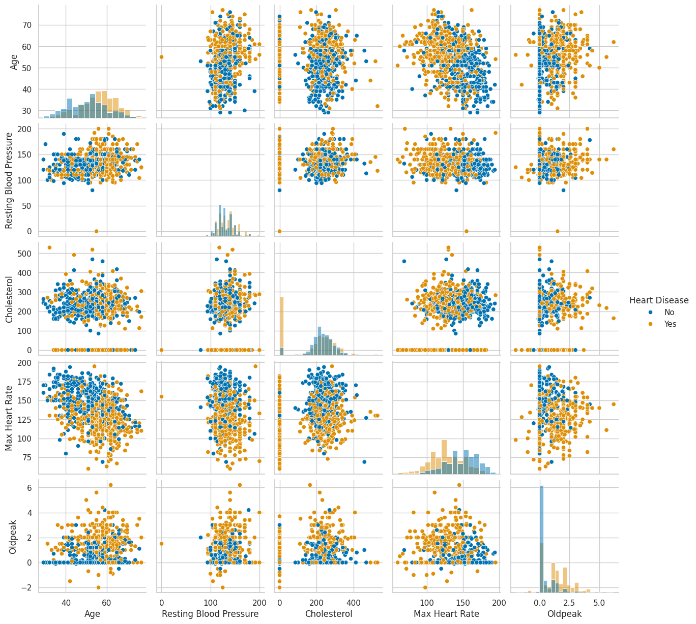
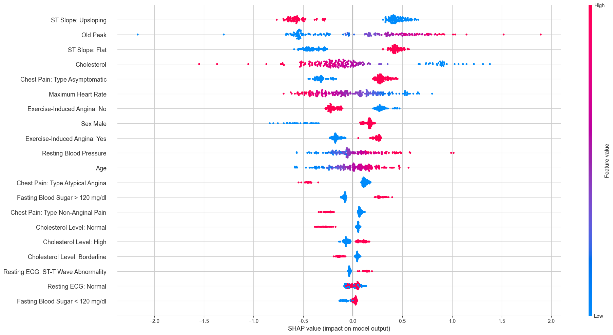
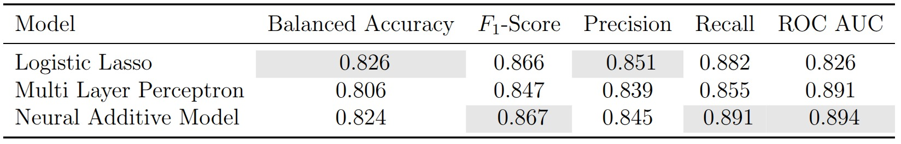

1 Introduction
Cardiovascular diseases remain by far the leading cause of death worldwide, and a lot of clinical decision-making still depends on a physician’s intuition and experience. The question we set out to answer in a course project for ETH’s Machine Learning for Healthcare class was straightforward: given a handful of routine clinical measurements, can we reliably predict whether a patient has heart disease? And more importantly, can we do so in a way that a cardiologist could actually scrutinize and trust?
We train three models that sit at very different points on the interpretability spectrum: a Lasso logistic regression (fully transparent), a multi-layer perceptron (a black box that needs post-hoc explanation), and a neural additive model (a recent architecture designed to combine neural network flexibility with additive model interpretability).
2 The Data
We utilize the Heart Failure Prediction Dataset from Kaggle — a popular benchmark that combines several older heart disease studies into one clean table. Each of the 734 training samples is a patient described by 11 clinical features and a binary label: heart disease or not. The features cover the usual suspects you would find in a cardiology workup — age, resting blood pressure, cholesterol, maximum heart rate, ST segment depression during exercise — alongside categorical variables like sex, chest pain type, fasting blood sugar, resting ECG result, exercise-induced angina, and ST slope direction. For a detailed description of the features, please see the Kaggle dataset documentation.
Even a quick pair plot of the numeric features hints at what the models will later confirm:

Patients with heart disease tend to be older, reach lower maximum heart rates during exercise, and show higher Oldpeak values (a measure of ST segment depression on an electrocardiogram). None of these relationships are dramatic on their own, but in combination they start painting a picture.
Looking at the categorical side, several features are heavily imbalanced (most study participants are male, most chest pain is asymptomatic), but the target variable itself is reasonably balanced — so no need for oversampling tricks.

3 Three Models, One Explainability Technique
3.1 Lasso Logistic Regression
Standard logistic regression models the probability of the positive class (heart disease) as a linear function of the features passed through a sigmoid:
\[ P(y = 1 \mid \mathbf{x}) = \sigma(\mathbf{w}^\top \mathbf{x} + b) = \frac{1}{1 + e^{-(\mathbf{w}^\top \mathbf{x} + b)}} \]
where \(\mathbf{w} \in \mathbb{R}^p\) is the weight vector, \(b\) is the bias, and \(\sigma\) is the logistic sigmoid function. The model is trained by minimizing the negative log-likelihood (binary cross-entropy). The Lasso variant adds an \(\ell_1\) penalty on the weights, giving the objective:
\[ \mathcal{L}(\mathbf{w}, b) = -\frac{1}{n} \sum_{i=1}^{n} \left[ y_i \log \hat{p}_i + (1 - y_i) \log(1 - \hat{p}_i) \right] + \lambda \|\mathbf{w}\|_1 \]
where \(\lambda > 0\) controls the regularization strength. The key property of the \(\ell_1\) penalty is that it encourages sparsity i.e. the possibility to drive coefficients all the way to exactly zero whilst keeping the objective convex. Realize that the \(\ell_1\) penalty is only applied to the weights \(\mathbf{w}\), not the bias \(b\), to maintain translation invariance. Finally, the problem \[ \arg\min_{\mathbf{w}, b} \mathcal{L}(\mathbf{w}, b) \] can be solved efficiently using coordinate descent or proximal gradient methods.
The induced sparsity makes the Lasso a natural starting point for any clinical prediction task where interpretability is a hard requirement: each non-zero coefficient directly tells you the direction and magnitude of that feature’s influence on the log-odds of disease. Specifically, after selecting \(\lambda\) through cross-validation and standardizing all numeric and dummy encoded features to ensure equal penalization, we obtained the coefficient plot below:

The two most prominent predictors are immediately visible. A flat ST slope has the largest positive coefficient in the model, while an upsloping ST slope has the largest negative coefficient, suggesting a protective association. This is consistent with cardiology literature: a flat or downsloping ST segment during exercise is a well-documented marker of myocardial ischemia, while an upsloping response is considered normal (Hodnesdal et al. 2013). Asymptomatic chest pain — which despite its name refers to a specific clinical presentation where patients experience atypical or no chest symptoms — has the third largest coefficient magnitude. This is a known red flag in cardiology, as patients who present without classic chest pain symptoms are often at higher risk because their disease goes undetected longer.
3.2 SHAP Values
Moving forward, we need a way to make the predictions of neural networks more explainable in a way that provides little additional overhead. Shapley additive explanations (SHAP) values (Lundberg and Lee (2017)) are the most well-known tool for such post-hoc explainability insights. SHAP is rooted in cooperative game theory with the idea to treat a prediction as a “game” where the features are “players” and the prediction is the “payout”, and then ask: how much did each player contribute? The Shapley value of feature \(j\) for a specific prediction is defined as:
\[ \phi_j = \sum_{S \subseteq \{1, \dots, p\} \setminus \{j\}} \frac{|S|!\;(p - |S| - 1)!}{p!} \left[ f(S \cup \{j\}) - f(S) \right] \]
where \(S\) is a subset of features, \(f(S)\) is the model’s expected output when only the features in \(S\) are “present” (and the remaining features are marginalized out), and \(p\) is the total number of features. The sum iterates over all possible subsets \(S\) that exclude feature \(j\), and computes the marginal contribution of adding \(j\) to each subset, weighted by the number of permutations in which that subset would arise. This yields an explainability method that is theoretically grounded, model-agnostic, and provides local explanations for individual predictions. In practice, exact computation of SHAP values is intractable for large feature sets, so various approximation methods (like Kernel SHAP or Tree SHAP) are used depending on the model type.
3.3 Multi-Layer Perceptron
A multi-layer perceptron (MLP) is a feed-forward neural network consisting of an input layer, one or more hidden layers, and an output layer. Given an input \(\mathbf{x} \in \mathbb{R}^p\), the forward pass through an MLP with \(L\) hidden layers computes:
\[ \mathbf{h}^{(0)} = \mathbf{x}, \qquad \mathbf{h}^{(\ell)} = \phi\!\left(\mathbf{W}^{(\ell)} \mathbf{h}^{(\ell-1)} + \mathbf{b}^{(\ell)}\right) \quad \text{for } \ell = 1, \dots, L \]
where \(\mathbf{W}^{(\ell)}\) and \(\mathbf{b}^{(\ell)}\) are the weight matrix and bias vector of layer \(\ell\), and \(\phi\) is a non-linear activation function (typically ReLU: \(\phi(z) = \max(0, z)\)). For binary classification, the final layer produces a scalar output passed through a sigmoid: \(\hat{p} = \sigma(\mathbf{w}^{(L+1)\top} \mathbf{h}^{(L)} + b^{(L+1)})\).
The power of MLPs lies in their expressiveness — with sufficient width and depth, they can approximate arbitrarily complex functions (the universal approximation theorem). The downside is that the learned representations are distributed across many neurons, layers, and non-linear transformations, making it essentially impossible to attribute a prediction to any single input feature by inspecting the weights alone. To crack open this black box, we turned to SHAP values.
The waterfall plots below show SHAP explanations for two healthy patients and two patients with heart disease:
 Two healthy patients: ST Slope Upsloping is the dominant protective factor Two healthy patients: ST Slope Upsloping is the dominant protective factor
|
 Two diseased patients: Old Peak and Cholesterol drive risk upward Two diseased patients: Old Peak and Cholesterol drive risk upward
|
For the healthy patients, having an upsloping ST slope was the strongest factor pushing the prediction toward “no disease”. For the diseased patients, high Oldpeak values and low cholesterol readings (likely the zero-imputed missing values) were the biggest risk drivers. The cholesterol finding might seem paradoxical at first — shouldn’t high cholesterol be bad? — but recall that the zero values were overwhelmingly associated with heart disease. The model is picking up on the missing-data signal, not on low cholesterol being protective.
The overall SHAP beeswarm plot across all test patients gives a broader view:

Each dot is one patient’s SHAP value for a given feature, colored by whether the feature value was high (red) or low (blue). The pattern for ST Slope Upsloping is particularly clean: high feature values (red, meaning the patient does have an upsloping slope) cluster exclusively on the negative SHAP side, while low values (blue, meaning no upsloping slope) cluster on the positive side. This is exactly the same story the Lasso told us, just from a completely different model.
3.4 Neural Additive Models
Neural Additive Models (NAMs), introduced by Agarwal et al. (2020), are an elegant attempt to get the best of both worlds. The model belongs to the family of generalized additive models (GAMs), which restrict the prediction to a sum of univariate functions:
\[ g\!\left(\mathbb{E}[y \mid \mathbf{x}]\right) = \beta + f_1(x_1) + f_2(x_2) + \dots + f_k(x_k) \]
where \(g\) is a link function (the logit for binary classification), \(\beta\) is a bias term, and each \(f_j\) is a shape function that depends on a single feature. Classical GAMs typically use splines for the \(f_j\)’s. The key innovation of NAMs is to parameterize each shape function as its own small neural network:
\[ P(y = 1 \mid \mathbf{x}) = \sigma\!\left(\beta + \sum_{j=1}^{k} \text{NN}_j(x_j)\right) \]
where each \(\text{NN}_j\) is a separate multi-layer perceptron that takes only \(x_j\) as input. Because each sub-network contains non-linear activation functions, the shape functions can be arbitrarily complex — unlike the linear relationships that logistic regression is limited to. But because the overall model is additive (no interactions between features), each learned shape function can be visualized independently.

This additive structure is the key insight. Because each feature is processed in isolation, there are no interactions between features inside the model. This means we can plot \(\text{NN}_j(x_j)\) as a function of \(x_j\) for every feature and see exactly how the model uses it — something that is impossible with a standard MLP where all features interact through shared hidden layers.
In practice, we found NAMs to be sensitive to hyperparameter choices. Initial attempts with hand-tuned parameters produced unstable shape functions that changed substantially across random seeds. Following the original paper, we used Bayesian optimization (via Optuna) to search the hyperparameter space, and trained an ensemble of 100 NAMs with different random initializations to get stable estimates.
The resulting shape functions are shown below. The thick blue line is the ensemble mean, the thin lines are individual ensemble members, and the red bars indicate data density:

These plots are where NAMs really shine. For the continuous features, we can read off the non-linear relationships directly. The Cholesterol shape function shows a sharp spike at zero (confirming the missing-data signal), followed by a relatively flat region for normal values and a slight uptick at very high values. Oldpeak shows a roughly monotonic increase — greater ST depression means higher risk. For the binary features, the shape functions collapse to simple step functions since there are only two possible inputs.
We also computed SHAP values for the NAM to compare with the MLP:

An interesting difference emerges when comparing this to the MLP’s SHAP plot. Because each feature is modeled by its own sub-network in the NAM, the SHAP values for a given feature depend only on that feature’s value — not on the values of other features. This is why the SHAP dots for binary features appear as two clean vertical lines (one per category), while in the MLP’s SHAP plot the same features show much more spread. The NAM’s additive structure constrains the explanations to be simpler and more consistent.
4 How Do They Compare?
4.1 Performance
After training a linear model, a black-box neural network, and an interpretable neural architecture on the same data, the natural question is: does the added complexity buy us anything? The short answer is no.

The Lasso leads on balanced accuracy (0.826) and precision (0.851). The NAM narrowly edges ahead on F1 (0.867), recall (0.891), and ROC AUC (0.894). The MLP lands somewhere in between. With only 734 patients and margins this thin, these differences are well within the range of statistical noise — the three models are, for all practical purposes, tied.
4.2 Feature Importance Agreement
The performance numbers are a draw, but the more compelling finding lies in what the models agree on. Despite having fundamentally different internal mechanics, all three consistently identify the same features as the strongest predictors:
- ST Slope is the single most important feature in all three models. An upsloping ST segment is protective; a flat one is a risk factor. This is well-established in cardiology: a flat or downsloping ST response to exercise suggests insufficient blood flow to the heart muscle.
- Oldpeak (ST depression during exercise) is the second or third most important feature across all models. Higher values indicate greater risk, consistent with the clinical interpretation of exercise-induced ischemia.
- Chest Pain Type: Asymptomatic is a strong positive predictor of heart disease in all three models. This reflects the clinical reality that patients with atypical presentations are often diagnosed later and with more advanced disease.
This level of agreement across fundamentally different model families is reassuring. It suggests that these features are genuinely predictive of heart disease in this population, not artifacts of any particular modeling choice.
5 Reflections
If we had to deploy one of these models in a clinical setting, the Lasso would be our pick — not because it outperforms the others, but because a cardiologist can inspect a table of coefficients and immediately see what is driving a prediction. The MLP requires SHAP to be interpretable after the fact; the NAM requires understanding shape functions. When patient outcomes are on the line, the model that a clinician can scrutinize and override with the least friction is the one worth deploying.
That said, the NAM proved its value as an exploratory tool. Its shape functions surfaced non-linear relationships that the Lasso is structurally unable to capture — the Cholesterol spike at zero being the clearest example. A linear model requires you to manually engineer a binary indicator for that pattern; the NAM discovers it on its own. For hypothesis generation and deeper data understanding, this is a meaningful advantage.
On the practical side, NAMs were considerably more difficult to train than either the Lasso or the MLP. The shape functions were sensitive to hyperparameter choices and random initialization, and producing reliable estimates required both Bayesian hyperparameter optimization and ensembling over 100 models. In a clinical deployment where reproducibility is non-negotiable, this added complexity is a legitimate concern.
The broader takeaway from this project is that the most productive question in healthcare ML is often not “which model achieves the highest AUC?” but rather “do we understand what the model has learned, and does it align with clinical knowledge?” When three architectures spanning the full interpretability spectrum independently converge on the same risk factors — and those factors match established cardiology — that convergence carries more weight than any single metric on a leaderboard.